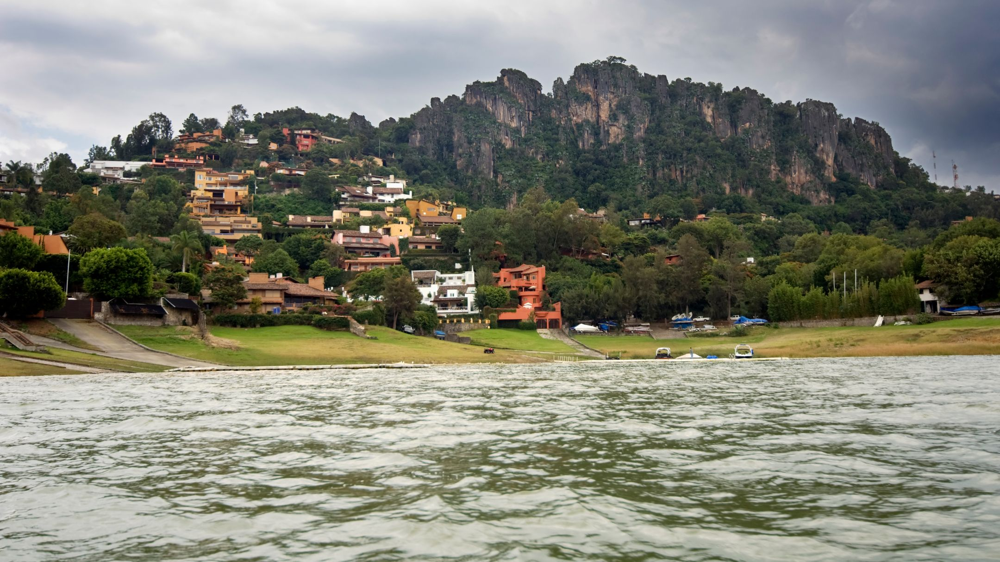
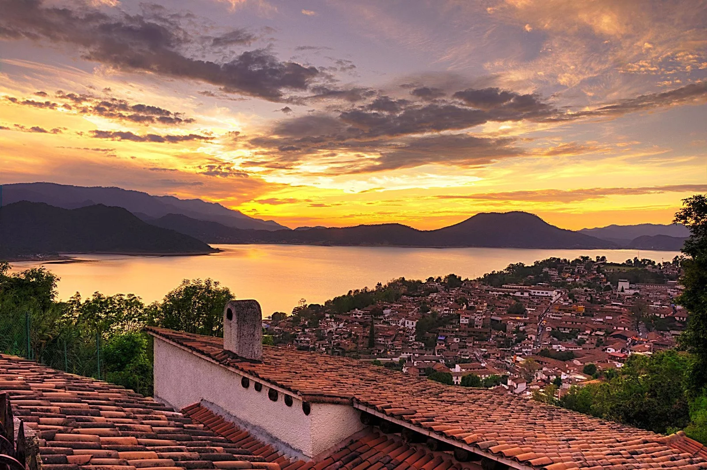
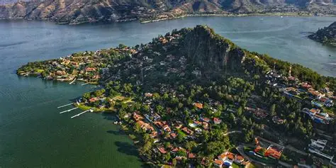
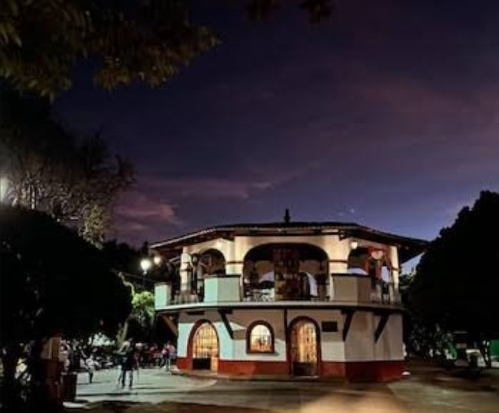
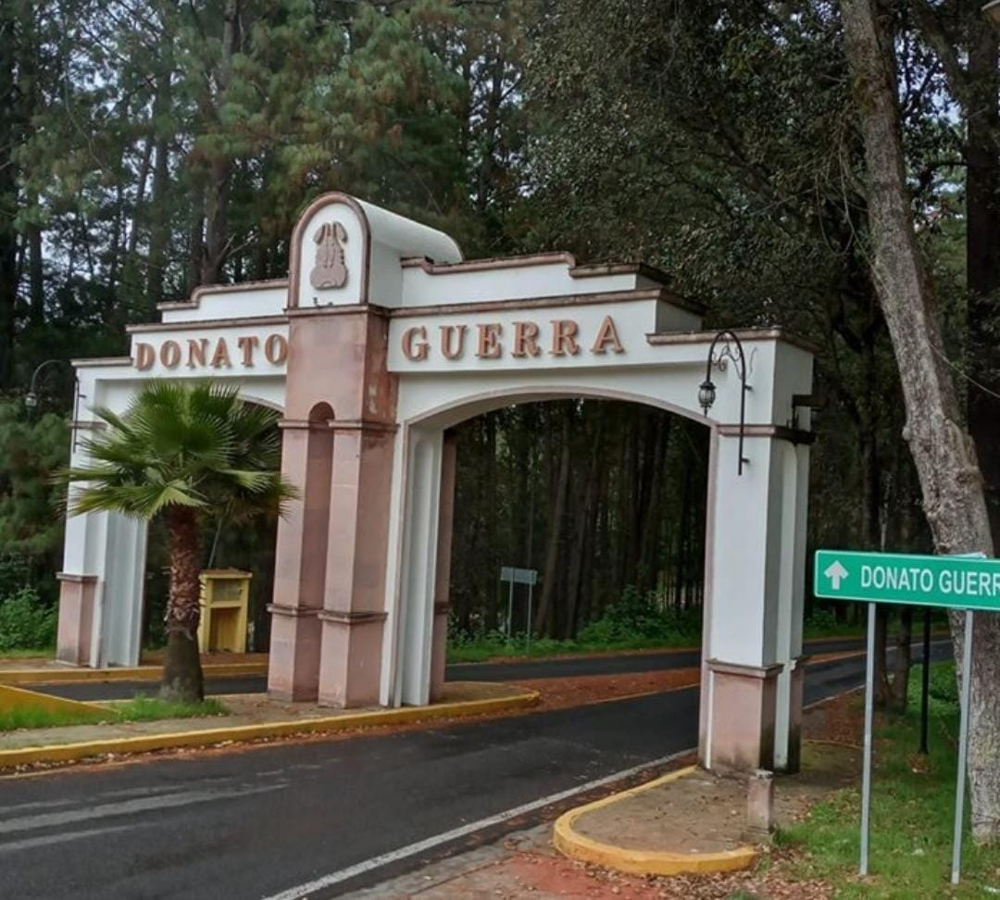
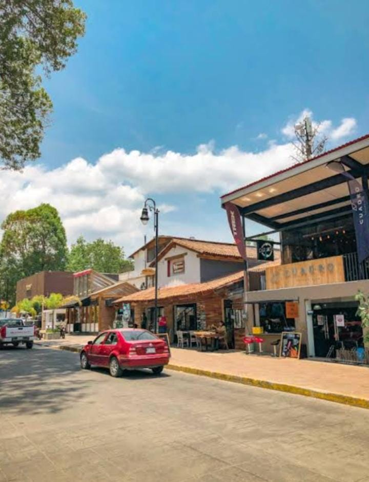

Valle de bravo no se visita, se siente.

"Paz acuatica en la laguna"
Enclavado a orillas del majestuoso lago de Valle de Bravo, este pintoresco pueblo mexicano se presenta como un destino turístico único que combina historia, belleza natural y un toque de elegancia. Ubicado en el Estado de México, Valle de Bravo se ha convertido en un refugio para aquellos que buscan escapar del bullicio de la Ciudad de México y sumergirse en un entorno que ofrece una experiencia completa y enriquecedora.
El lago de Valle de Bravo es el corazón indiscutible de esta joya turística. Sus aguas tranquilas y sus orillas bordeadas de bosques crean un paisaje impresionante que invita a la relajación y la contemplación. La práctica de deportes acuáticos como la vela y el windsurf es popular entre los visitantes, mientras que los paseos en bote ofrecen una perspectiva única de la exuberante naturaleza que rodea el lago.

"Atardecer en Valle de bravo "
En Valle de Bravo los atardeceres son especialmente llamativos por sus tonos naranja y rosa sobre el agua, visibles desde terrazas y miradores como Cinco Rodavento, Los Veleros y Na-ha en El Santuario
Desde la mañana, cuando la neblina se levanta lentamente, hasta el atardecer cuando el cielo se pinta de tonos naranja y rosa, el lago ofrece uno de los paisajes más fotografiados del centro de México. En los últimos años, la escena gastronómica del destino ha crecido de forma notable. Restaurantes, rooftops y bares han apostado por terrazas panorámicas que permiten disfrutar de buena comida, coctelería creativa y algunas de las mejores vistas del Lago.

"Vista del pueblo desde lo alto"

"Kiosco con un toque de obscuridad"

"Arco para Donato Guerra"

"Paso por la calle principal de la comunidad"